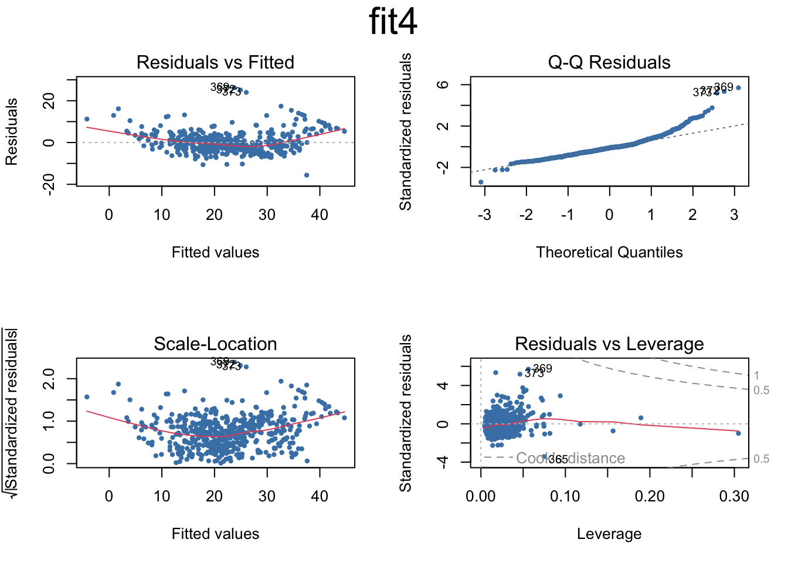
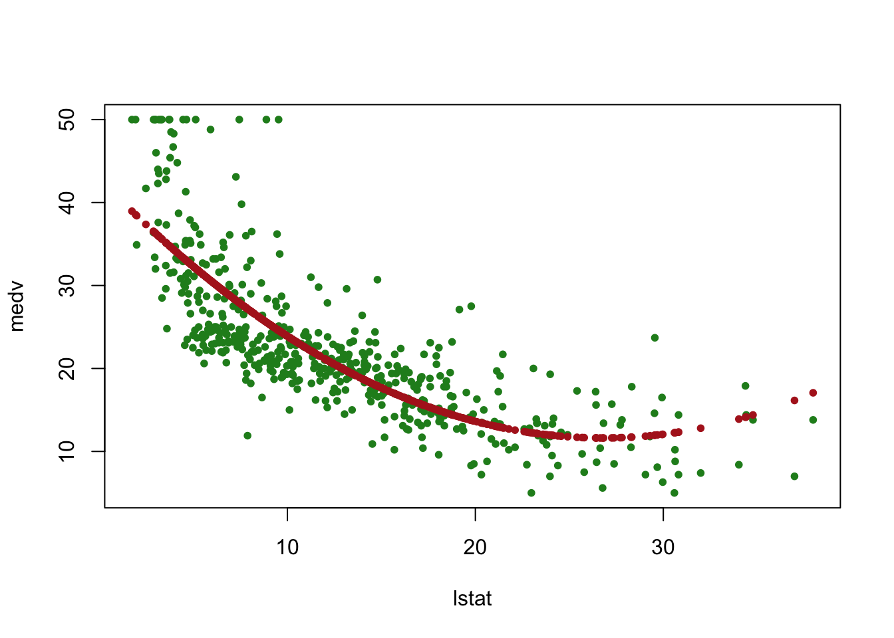
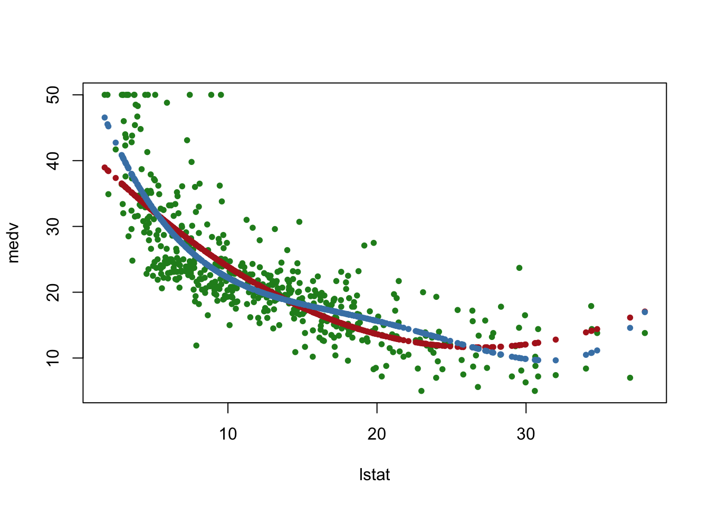
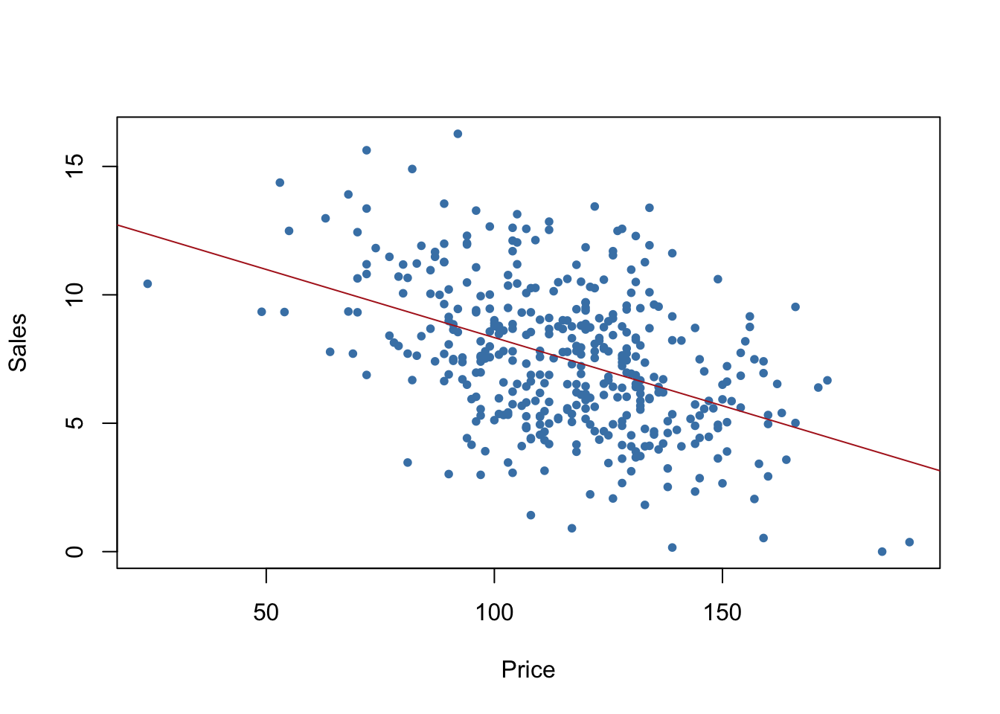
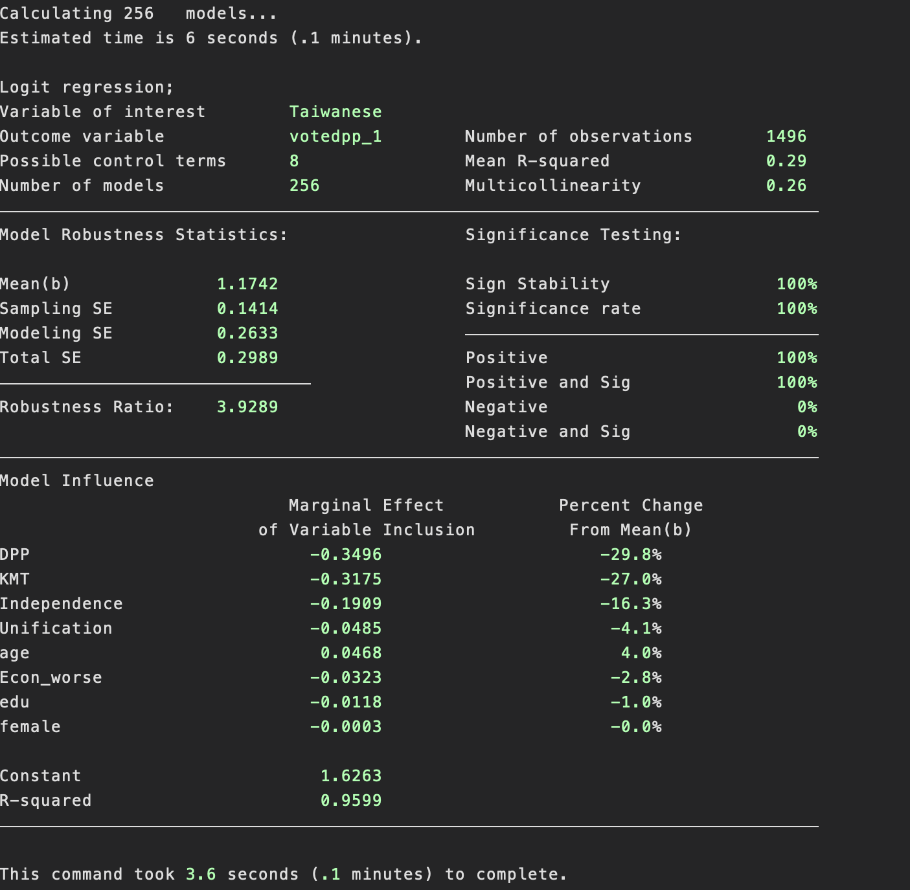

library(easypackages)
libraries("arm","MASS","ISLR")
attach(Boston)
names(Boston) [1] "crim" "zn" "indus" "chas" "nox" "rm" "age"
[8] "dis" "rad" "tax" "ptratio" "black" "lstat" "medv" Regression - Linearity and Beyond
An Intro to Logit Methods
Tyler Merrill
The Univeristy of Texas at Dallas
Data, mining, learning
Setting up our data-sets:
[1] "crim" "zn" "indus" "chas" "nox" "rm" "age"
[8] "dis" "rad" "tax" "ptratio" "black" "lstat" "medv" Plot:
then fit a new simple OLS line with explanatory variable ‘medv’
Call:
lm(formula = medv ~ lstat, data = Boston)
Coefficients:
(Intercept) lstat
34.55 -0.95
Call:
lm(formula = medv ~ lstat, data = Boston)
Residuals:
Min 1Q Median 3Q Max
-15.168 -3.990 -1.318 2.034 24.500
Coefficients:
Estimate Std. Error t value Pr(>|t|)
(Intercept) 34.55384 0.56263 61.41 <2e-16 ***
lstat -0.95005 0.03873 -24.53 <2e-16 ***
---
Signif. codes: 0 '***' 0.001 '**' 0.01 '*' 0.05 '.' 0.1 ' ' 1
Residual standard error: 6.216 on 504 degrees of freedom
Multiple R-squared: 0.5441, Adjusted R-squared: 0.5432
F-statistic: 601.6 on 1 and 504 DF, p-value: < 2.2e-16 [1] "coefficients" "residuals" "effects" "rank"
[5] "fitted.values" "assign" "qr" "df.residual"
[9] "xlevels" "call" "terms" "model" Make predictions using the lstat variable:
fit lwr upr
1 34.55384 33.44846 35.65922
2 29.80359 29.00741 30.59978
3 25.05335 24.47413 25.63256
4 20.30310 19.73159 20.87461 fit lwr upr
1 34.55384 22.291923 46.81576
2 29.80359 17.565675 42.04151
3 25.05335 12.827626 37.27907
4 20.30310 8.077742 32.52846Let’s try some multi-variate regression:
Call:
lm(formula = medv ~ lstat + age, data = Boston)
Residuals:
Min 1Q Median 3Q Max
-15.981 -3.978 -1.283 1.968 23.158
Coefficients:
Estimate Std. Error t value Pr(>|t|)
(Intercept) 33.22276 0.73085 45.458 < 2e-16 ***
lstat -1.03207 0.04819 -21.416 < 2e-16 ***
age 0.03454 0.01223 2.826 0.00491 **
---
Signif. codes: 0 '***' 0.001 '**' 0.01 '*' 0.05 '.' 0.1 ' ' 1
Residual standard error: 6.173 on 503 degrees of freedom
Multiple R-squared: 0.5513, Adjusted R-squared: 0.5495
F-statistic: 309 on 2 and 503 DF, p-value: < 2.2e-16
Call:
lm(formula = medv ~ ., data = Boston)
Residuals:
Min 1Q Median 3Q Max
-15.595 -2.730 -0.518 1.777 26.199
Coefficients:
Estimate Std. Error t value Pr(>|t|)
(Intercept) 3.646e+01 5.103e+00 7.144 3.28e-12 ***
crim -1.080e-01 3.286e-02 -3.287 0.001087 **
zn 4.642e-02 1.373e-02 3.382 0.000778 ***
indus 2.056e-02 6.150e-02 0.334 0.738288
chas 2.687e+00 8.616e-01 3.118 0.001925 **
nox -1.777e+01 3.820e+00 -4.651 4.25e-06 ***
rm 3.810e+00 4.179e-01 9.116 < 2e-16 ***
age 6.922e-04 1.321e-02 0.052 0.958229
dis -1.476e+00 1.995e-01 -7.398 6.01e-13 ***
rad 3.060e-01 6.635e-02 4.613 5.07e-06 ***
tax -1.233e-02 3.760e-03 -3.280 0.001112 **
ptratio -9.527e-01 1.308e-01 -7.283 1.31e-12 ***
black 9.312e-03 2.686e-03 3.467 0.000573 ***
lstat -5.248e-01 5.072e-02 -10.347 < 2e-16 ***
---
Signif. codes: 0 '***' 0.001 '**' 0.01 '*' 0.05 '.' 0.1 ' ' 1
Residual standard error: 4.745 on 492 degrees of freedom
Multiple R-squared: 0.7406, Adjusted R-squared: 0.7338
F-statistic: 108.1 on 13 and 492 DF, p-value: < 2.2e-16This will include all variables except Boston
par(mfrow=c(2,2))
plot(fit3,pch=20, cex=.8, col="steelblue")
mtext("fit3", side = 3, line = - 2, cex = 2, outer = TRUE)Try another permutation:
Call:
lm(formula = medv ~ crim + zn + chas + nox + rm + dis + rad +
tax + ptratio + black + lstat, data = Boston)
Residuals:
Min 1Q Median 3Q Max
-15.5984 -2.7386 -0.5046 1.7273 26.2373
Coefficients:
Estimate Std. Error t value Pr(>|t|)
(Intercept) 36.341145 5.067492 7.171 2.73e-12 ***
crim -0.108413 0.032779 -3.307 0.001010 **
zn 0.045845 0.013523 3.390 0.000754 ***
chas 2.718716 0.854240 3.183 0.001551 **
nox -17.376023 3.535243 -4.915 1.21e-06 ***
rm 3.801579 0.406316 9.356 < 2e-16 ***
dis -1.492711 0.185731 -8.037 6.84e-15 ***
rad 0.299608 0.063402 4.726 3.00e-06 ***
tax -0.011778 0.003372 -3.493 0.000521 ***
ptratio -0.946525 0.129066 -7.334 9.24e-13 ***
black 0.009291 0.002674 3.475 0.000557 ***
lstat -0.522553 0.047424 -11.019 < 2e-16 ***
---
Signif. codes: 0 '***' 0.001 '**' 0.01 '*' 0.05 '.' 0.1 ' ' 1
Residual standard error: 4.736 on 494 degrees of freedom
Multiple R-squared: 0.7406, Adjusted R-squared: 0.7348
F-statistic: 128.2 on 11 and 494 DF, p-value: < 2.2e-16Plot some diagnostic stats:
par(mfrow=c(2,2), main="fit4")
plot(fit4,pch=20, cex=.8, col="steelblue")
mtext("fit4", side = 3, line = - 2, cex = 2, outer = TRUE)
then coefficients:
Let us add some interaction terms:
Call:
lm(formula = medv ~ lstat * tax, data = Boston)
Residuals:
Min 1Q Median 3Q Max
-15.741 -4.108 -1.107 1.892 26.864
Coefficients:
Estimate Std. Error t value Pr(>|t|)
(Intercept) 38.3760008 1.5944708 24.068 < 2e-16 ***
lstat -1.0795139 0.1185942 -9.103 < 2e-16 ***
tax -0.0116439 0.0040741 -2.858 0.00444 **
lstat:tax 0.0004416 0.0002460 1.795 0.07324 .
---
Signif. codes: 0 '***' 0.001 '**' 0.01 '*' 0.05 '.' 0.1 ' ' 1
Residual standard error: 6.164 on 502 degrees of freedom
Multiple R-squared: 0.5534, Adjusted R-squared: 0.5508
F-statistic: 207.4 on 3 and 502 DF, p-value: < 2.2e-16another
Call:
lm(formula = medv ~ lstat + I(lstat^2), data = Boston)
Residuals:
Min 1Q Median 3Q Max
-15.2834 -3.8313 -0.5295 2.3095 25.4148
Coefficients:
Estimate Std. Error t value Pr(>|t|)
(Intercept) 42.862007 0.872084 49.15 <2e-16 ***
lstat -2.332821 0.123803 -18.84 <2e-16 ***
I(lstat^2) 0.043547 0.003745 11.63 <2e-16 ***
---
Signif. codes: 0 '***' 0.001 '**' 0.01 '*' 0.05 '.' 0.1 ' ' 1
Residual standard error: 5.524 on 503 degrees of freedom
Multiple R-squared: 0.6407, Adjusted R-squared: 0.6393
F-statistic: 448.5 on 2 and 503 DF, p-value: < 2.2e-16par(mfrow=c(1,1))
plot(medv~lstat, pch=20, col="forestgreen")
points(lstat,fitted(fit6),col="firebrick",pch=20)
add a new fit to the graph:
par(mfrow=c(1,1))
plot(medv~lstat, pch=20, col="forestgreen")
points(lstat,fitted(fit6),col="firebrick",pch=20)
fit7=lm(medv~poly(lstat,4))
points(lstat,fitted(fit7),col="steelblue",pch=20)
Let us take a crack at incorporating qualitative explanatory variables:
[1] "Sales" "CompPrice" "Income" "Advertising" "Population"
[6] "Price" "ShelveLoc" "Age" "Education" "Urban"
[11] "US" Sales CompPrice Income Advertising
Min. : 0.000 Min. : 77 Min. : 21.00 Min. : 0.000
1st Qu.: 5.390 1st Qu.:115 1st Qu.: 42.75 1st Qu.: 0.000
Median : 7.490 Median :125 Median : 69.00 Median : 5.000
Mean : 7.496 Mean :125 Mean : 68.66 Mean : 6.635
3rd Qu.: 9.320 3rd Qu.:135 3rd Qu.: 91.00 3rd Qu.:12.000
Max. :16.270 Max. :175 Max. :120.00 Max. :29.000
Population Price ShelveLoc Age Education
Min. : 10.0 Min. : 24.0 Bad : 96 Min. :25.00 Min. :10.0
1st Qu.:139.0 1st Qu.:100.0 Good : 85 1st Qu.:39.75 1st Qu.:12.0
Median :272.0 Median :117.0 Medium:219 Median :54.50 Median :14.0
Mean :264.8 Mean :115.8 Mean :53.32 Mean :13.9
3rd Qu.:398.5 3rd Qu.:131.0 3rd Qu.:66.00 3rd Qu.:16.0
Max. :509.0 Max. :191.0 Max. :80.00 Max. :18.0
Urban US
No :118 No :142
Yes:282 Yes:258
Add some interaction terms
Call:
lm(formula = Sales ~ . + Income:Advertising + Age:Price, data = Carseats)
Residuals:
Min 1Q Median 3Q Max
-2.9208 -0.7503 0.0177 0.6754 3.3413
Coefficients:
Estimate Std. Error t value Pr(>|t|)
(Intercept) 6.5755654 1.0087470 6.519 2.22e-10 ***
CompPrice 0.0929371 0.0041183 22.567 < 2e-16 ***
Income 0.0108940 0.0026044 4.183 3.57e-05 ***
Advertising 0.0702462 0.0226091 3.107 0.002030 **
Population 0.0001592 0.0003679 0.433 0.665330
Price -0.1008064 0.0074399 -13.549 < 2e-16 ***
ShelveLocGood 4.8486762 0.1528378 31.724 < 2e-16 ***
ShelveLocMedium 1.9532620 0.1257682 15.531 < 2e-16 ***
Age -0.0579466 0.0159506 -3.633 0.000318 ***
Education -0.0208525 0.0196131 -1.063 0.288361
UrbanYes 0.1401597 0.1124019 1.247 0.213171
USYes -0.1575571 0.1489234 -1.058 0.290729
Income:Advertising 0.0007510 0.0002784 2.698 0.007290 **
Price:Age 0.0001068 0.0001333 0.801 0.423812
---
Signif. codes: 0 '***' 0.001 '**' 0.01 '*' 0.05 '.' 0.1 ' ' 1
Residual standard error: 1.011 on 386 degrees of freedom
Multiple R-squared: 0.8761, Adjusted R-squared: 0.8719
F-statistic: 210 on 13 and 386 DF, p-value: < 2.2e-16This allows us to check on the comparative line-up of our factors, making sure they accord with out intuition or domain knowledge.
Let us also make nice plot of ‘Price vs. Sales’ utilizing a range of functions:
regplot=function(x,y,...){
fit=lm(y~x)
plot(x,y,...)
abline(fit,col="firebrick")
}
regplot(Price,Sales,xlab="Price",ylab="Sales",col="steelblue",pch=20)
onto logit…
We are going to be analyzing the Taiwan Election and Democratization Study (TEDS) data-set. Specifically, we are going to use ‘votesai’, a vote for the female candidate of the then opposition party DPP, Tsai Ing-wen, as the dependent variable in a logistic regression.
First, loading up and taking a first swing:
library(haven)
TEDS_2016 <- read_stata("https://github.com/datageneration/home/blob/master/DataProgramming/data/TEDS_2016.dta?raw=true")
glm.vt=glm(votetsai~female,data=TEDS_2016,family=binomial)
glm.vt
Call: glm(formula = votetsai ~ female, family = binomial, data = TEDS_2016)
Coefficients:
(Intercept) female
0.54971 -0.06517
Degrees of Freedom: 1260 Total (i.e. Null); 1259 Residual
(429 observations deleted due to missingness)
Null Deviance: 1667
Residual Deviance: 1666 AIC: 1670It look like females are sightly less likely to vote for Tsai Ing-wen. Specifically, when a respondent is female it appears the odds of voting for Tsai decreases by .94% on average (via the odds ratio exp(-0.06517)). We can try adding some more explanatory variables and see what happens:
glm.vt2 <- glm(
votetsai ~ female + KMT + DPP + age + Independence + Econ_worse + Govt_dont_care + Minnan_father + Mainland_father + Taiwanese,
data=TEDS_2016,family=binomial
)
summary(glm.vt2)
Call:
glm(formula = votetsai ~ female + KMT + DPP + age + Independence +
Econ_worse + Govt_dont_care + Minnan_father + Mainland_father +
Taiwanese, family = binomial, data = TEDS_2016)
Coefficients:
Estimate Std. Error z value Pr(>|z|)
(Intercept) -0.457408 0.400868 -1.141 0.25385
female -0.085090 0.188540 -0.451 0.65177
KMT -2.919937 0.257730 -11.329 < 2e-16 ***
DPP 2.480782 0.274907 9.024 < 2e-16 ***
age 0.008425 0.005786 1.456 0.14536
Independence 1.010504 0.251712 4.015 5.96e-05 ***
Econ_worse 0.309492 0.188410 1.643 0.10045
Govt_dont_care 0.003994 0.188244 0.021 0.98307
Minnan_father -0.288656 0.251843 -1.146 0.25172
Mainland_father -1.170440 0.387627 -3.020 0.00253 **
Taiwanese 0.938965 0.196506 4.778 1.77e-06 ***
---
Signif. codes: 0 '***' 0.001 '**' 0.01 '*' 0.05 '.' 0.1 ' ' 1
(Dispersion parameter for binomial family taken to be 1)
Null deviance: 1666.53 on 1260 degrees of freedom
Residual deviance: 769.46 on 1250 degrees of freedom
(429 observations deleted due to missingness)
AIC: 791.46
Number of Fisher Scoring iterations: 6A much wider range of estimates is now available to see, indicating more complex relationships are probably operating beneath the surface.
As an extra check, we can run the ‘mrobust’ package in STATA in order to find the ‘best’ combination of predictor variables. I’ll skip over the coding here, but the output that results from it is:

Which seems to imply that being ‘female’ may have less of on an impact on voting for ‘Tsai’ than suggested above.